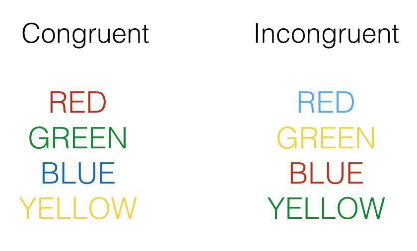

No leas, ¡observa!
Descubre cómo la atención, la percepción y la lectura automática ponen a prueba nuestro cerebro.
Di en voz alta el color de la tinta de cada palabra del tablero, no lo que dice. ¿Cuánto tardas?
Las tintas cambian cada pocos segundos. Nunca coinciden con la palabra.
Un experimento de 1935 que tu cerebro sigue sin poder ganar
El efecto Stroop es uno de los experimentos más conocidos de la psicología cognitiva. Demuestra cómo la lectura automática puede interferir cuando intentamos nombrar el color de una palabra. En este sitio podrás conocer su historia, realizar actividades y explorar recursos relacionados con este fenómeno.
Prueba interactiva
Mide tu propio tiempo de reacción con palabras congruentes e incongruentes.
ProyectosEl experimento
Qué es, quién lo descubrió, cómo se hizo y qué resultados obtuvo.
TextosPoema, cómic y carta
Tres textos propios que explican el fenómeno desde otro ángulo.
VideosGalería
Videos, documentales y podcasts para seguir explorando.
Congruente contra incongruente
Cuando la palabra y la tinta coinciden, respondemos rápido. Cuando no coinciden, el significado de la palabra se mete en medio y tardamos más. Esa diferencia de tiempo es el efecto Stroop.

Fotos y reel
Aquí irán las fotos del equipo y el reel de presentación del proyecto.